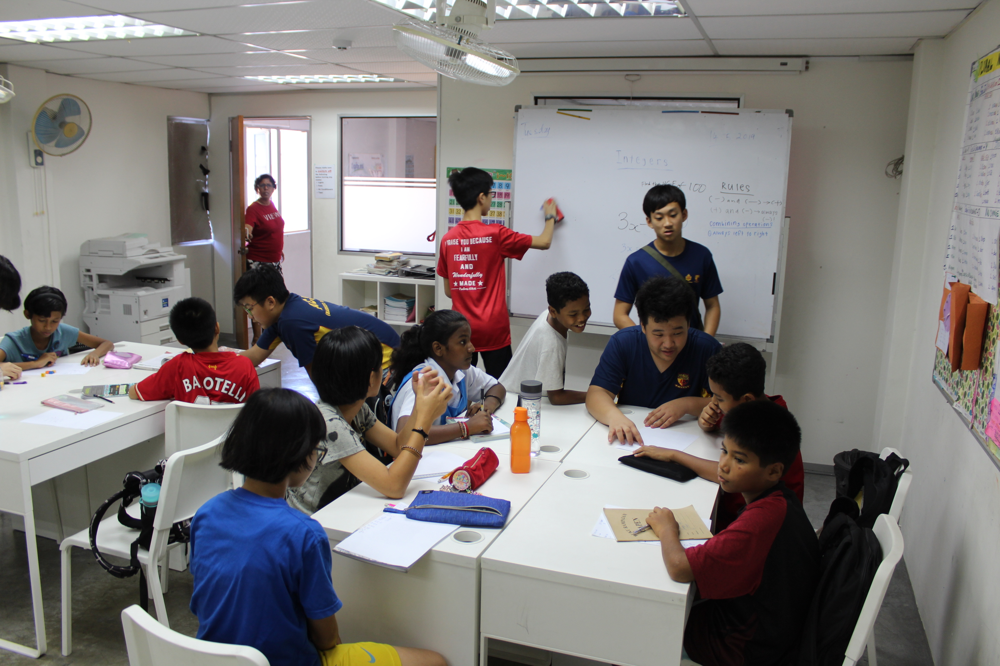

Hello! My name is Ervin.I joined Anglo-Chinese School (Barker Road) in 2017 and I am currently in Secondary 4. I am planning to apply for EAE in an IT-related course in a polytechnic as I feel polytechnics have the resources and a wide range of oppotunities for me to enhance my computing skills. I joined the school's Digital Media CCA where I honed my skills as a photographer. I love aviation, technology gadgets, getting my hands dirty with code. I also enjoy taking photos of landscapes, cityscapes and nature. |

|
|---|

As a vice-chairperson overseeing all aspects of photography in the CCA, I am in charge of planning CCA training sessions and I teach my juniors typical photography skills during assigned student-led sessions from time to time. I am also in charge of supervising my junior photographers who are on duty for capturing school events. I stay behind after every school event sieving through photos and
As a Cyberwellness Ambassador in my school, it is my mission to impact my school community to be safe and vigilant when using the Internet. I do so by organising assembly talks with the school population as well as having talks with parents as to what kind of dangers they can expect lurking around in the Internet. I cover various topics from content creators and fake news to malware, data corruption and cyber attacks. My role also fueled my interest in exploring the growing world of the cybersecurity and wargaming industry.
I am fascinated by the professional resources, facilities and curriculum that polytechnic education has to offer to me. I plan to pursue an IT-related diploma for three years, afterwhich I wish to use my IT skills honed in polytechnic and experience real-world cybersecurity operations by applying for the Cyber NSF scheme for three years. Having such experiences, I dream of pursuing a major in Computer Science in Massachusetts Institue of Technology to broadedn my knowledge in computers. (Note: I do not wish to be admitted into MIT for reputation, but because I strongly admire the institute's diversified and holistic curriculum and internships they offer for their passionate students.

2011-2016
2017-2020
As a Cyberwellness Amabassador, I came across a topic based on cybersecurity which I was tasked to do an assembly talk with my school on. I also learned about cybersecurity in my O-Level Computing syllabus. Through learning and researching, I learnt more about the dangers lurking around the Internet such as viruses, worms, data coruption, scams, phishing, pharming and how we should encrypt our data to be safer online through public key encryption, two-factor authentication and hashing. Then, whilst looking for which IT course was suitable for me, I came across SP's exciting course, Infocomm Security Management. I was fascinated by the exciting modules and simulated curriculum that the course has to offer. When looking through the modules the course offers, I got to know more about ethical hacking, digital forensics, penetration testing and reverse malware engineering. I always picture myself defending Singapore's cyberspace from cyber criminals who threaten to steal our protected data and money.
When I attended the POSB iCode challenge in 2019 organised by Nanyang Polytechnic, I was challenged to come up with algorithms, proposals and solutions to current issues in Singapore scoiety's; issues like financial literacy, ageing population and transportation. Then, I came acorss viral videos of artificial intelligence in action. This was when I realised that artificaial intelleigence can be an asset in the IT industry, and I wish to build something run by AI to solve problems. Looking at SP Diploma in Applied AI and Analytics, I am in awe by the modules offered such as Mathematics for AI, DevOps and Machine Learning. Look at the course's project showcases during the SP Open House, I am motivated to build bots and machines that can contribute to making Singapore a smart nation and the lives of people easier.

Member of Cyber Youth SingaporeI got to interact with like-minded youths who exchange all knowledge about cybersecurity with each other. With the help of the Red-Teaming special interest group (SIG) of CYS, I have access to various resources which allow me to research more about Cyber Attacks and Defence Tactics, Ethical Hacking and Cryptography with Python (SHA256, XOR) |

Participant of BuildingBlocsParticipating in workshops and conferences organised by BuildingBlocs introduced me to new programming languages I previously had not known such as NoSQL and Unity. |
|---|
During the circuit breaker period which was implemented in May, I decided to volunteer in Foodbank's intiative to provide food aid to residents around Singapore who cannot get a meal during the lockdown. I was involved in warehouse duties at Xpace and packed emergency rations to be delivered to needy households all around the island. Moreover, I spent three weeks delivering packaged meals to needy households around Jurong West and Boon Lay.
 |
C21@ACSBR is an immersion programme to Southeast Asia for all Secondary Three students, aiming to raise awareness and insights about Southeast Asian countries and their cultures to youths like me. It is also a service trip to revitalise poor villages and orphanages. The school dispatches several groups in the cohort to Myanmmar, Malaysia, Thailand and Vietnam. I was dispatched to Selangor, Malaysia where my team and I revitalised an orphanage in Semenyih (Desa Amal Jireh) and collaborated with students from Hin Hua High School, a Malaysian Chinese independent school. We also visited the town of Klang where we did an exchange programme with our Malaysian counterpart school to learn more about their school history, herritage, culture and education system.
As of 2020, the school has discontinued the C21 programme to make way for MOE's new mandatory OBS programme for all Secondary Three students.
|  | ||